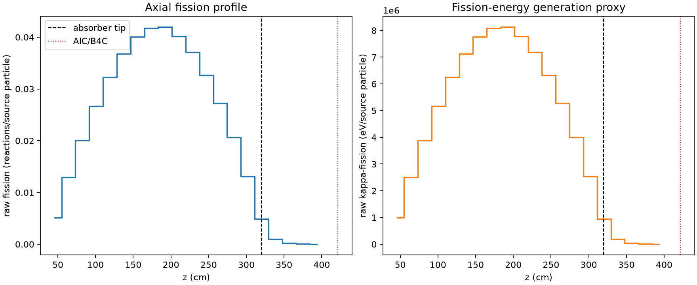
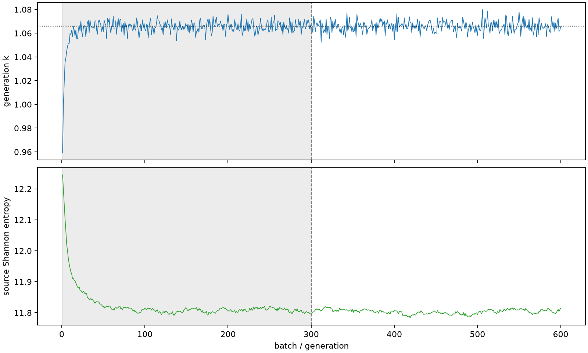

| field | value |
|---|---|
| experiment | V2-STAGE_128_OGRENCI_02-0006 |
| k | 1.0659164198659605 |
| MC standard error | 0.0001864929588525039 |
| seconds | 1145.6636273989998 |
| acceptance | not_assessed |
| convergence | review_required |
Completed is output integrity only; physical and statistical review required. Zero tallies do not prove zero production or zero uncertainty.
| diagnostic | value |
|---|---|
| geometric fuel voxels | 5280 |
| zero fission tally voxels | 0 |
| low signal fuel voxels | 352 |
| low signal fission share | 6.540583234063449e-05 |
| low signal kappa share | 6.544323630654133e-05 |
| important fission share | 0.9500944852763736 |
| previous filter included | 4928 |
| duration estimate s | 1562.5173488400023 |
| actual minus estimate s | -416.85372144100256 |
| fission relative MC error | statistics |
|---|---|
| all_geometric_fuel | {"voxels": 5280, "positive_mean_voxels": 5280, "zero_mean_voxels": 0, "undefined_relative_error_voxels": 0, "median": 0.010288049236244405, "p95": 0.2771894598629715, "maximum": 0.6661380884097892} |
| low_signal | {"voxels": 352, "positive_mean_voxels": 352, "zero_mean_voxels": 0, "undefined_relative_error_voxels": 0, "median": 0.35381991561563586, "p95": 0.502825873739623, "maximum": 0.6661380884097892} |
| important_95pct | {"voxels": 3478, "positive_mean_voxels": 3478, "zero_mean_voxels": 0, "undefined_relative_error_voxels": 0, "median": 0.00858576813393369, "p95": 0.013156386850830778, "maximum": 0.016926772459277938} |
| outside_previous_filter | {"voxels": 352, "positive_mean_voxels": 352, "zero_mean_voxels": 0, "undefined_relative_error_voxels": 0, "median": 0.35381991561563586, "p95": 0.502825873739623, "maximum": 0.6661380884097892} |
| kappa_fission relative MC error | statistics |
|---|---|
| all_geometric_fuel | {"voxels": 5280, "positive_mean_voxels": 5280, "zero_mean_voxels": 0, "undefined_relative_error_voxels": 0, "median": 0.0102744694187978, "p95": 0.27677465034203624, "maximum": 0.6651461351052013} |
| low_signal | {"voxels": 352, "positive_mean_voxels": 352, "zero_mean_voxels": 0, "undefined_relative_error_voxels": 0, "median": 0.35307843119589444, "p95": 0.5020796662293351, "maximum": 0.6651461351052013} |
| important_95pct | {"voxels": 3478, "positive_mean_voxels": 3478, "zero_mean_voxels": 0, "undefined_relative_error_voxels": 0, "median": 0.008575054458409375, "p95": 0.013141520596180166, "maximum": 0.016906080689744005} |
| outside_previous_filter | {"voxels": 352, "positive_mean_voxels": 352, "zero_mean_voxels": 0, "undefined_relative_error_voxels": 0, "median": 0.35307843119589444, "p95": 0.5020796662293351, "maximum": 0.6651461351052013} |
| axial bin | fission share | kappa-fission share |
|---|---|---|
| 1 | 0.011785013724217268 | 0.011785631185570447 |
| 2 | 0.029760430699983752 | 0.029760445969627167 |
| 3 | 0.046104238980188936 | 0.046104176004918236 |
| 4 | 0.06142635048348622 | 0.061426113362509076 |
| 5 | 0.07429272392670047 | 0.07429244926582795 |
| 6 | 0.08466621383020938 | 0.08466603909425245 |
| 7 | 0.09222429835564373 | 0.09222398161933183 |
| 8 | 0.09608662637756579 | 0.09608634720351733 |
| 9 | 0.09649338020559228 | 0.09649298140295066 |
| 10 | 0.0923900078520353 | 0.09238982026457741 |
| 11 | 0.08539593427142636 | 0.08539561911075955 |
| 12 | 0.0750797291512154 | 0.07507924457870617 |
| 13 | 0.06254889740759584 | 0.06254866139008 |
| 14 | 0.047480479164494056 | 0.04748033069723547 |
| 15 | 0.030129360183863058 | 0.03012927815885633 |
| 16 | 0.01126805532027905 | 0.011269375720801429 |
| 17 | 0.002208295065074236 | 0.002209208706025824 |
| 18 | 0.0005158247762552532 | 0.0005160745968274013 |
| 19 | 0.00011911450633064734 | 0.00011917652808496483 |
| 20 | 2.5025717842988243e-05 | 2.5045139540412447e-05 |
Histories include the inactive-to-active transition at batch 300. kappa-fission approximates fission energy production, not total heat deposition.

